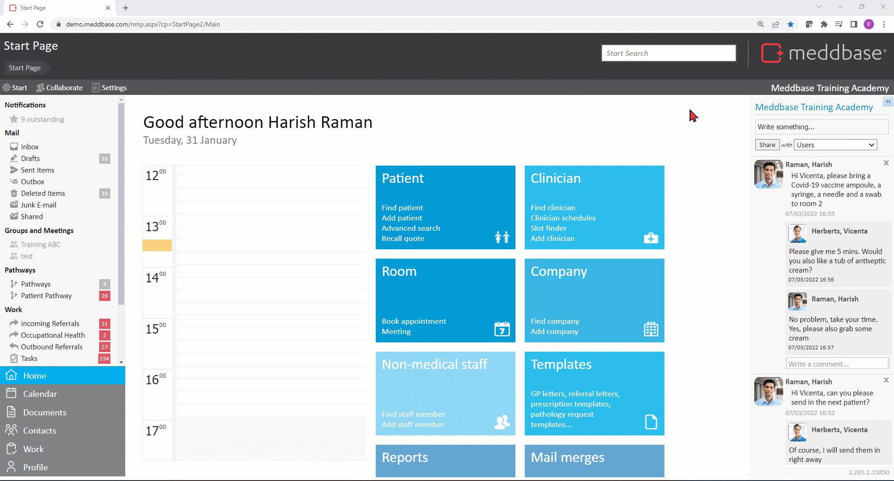
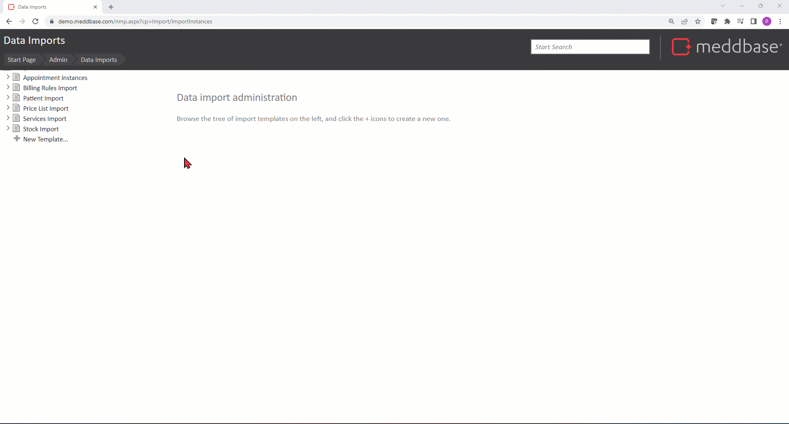
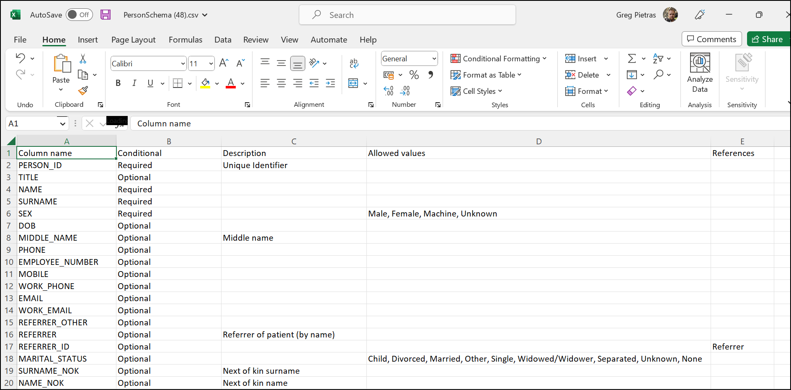
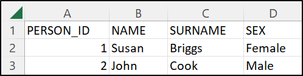
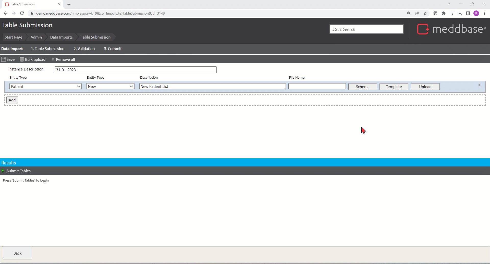
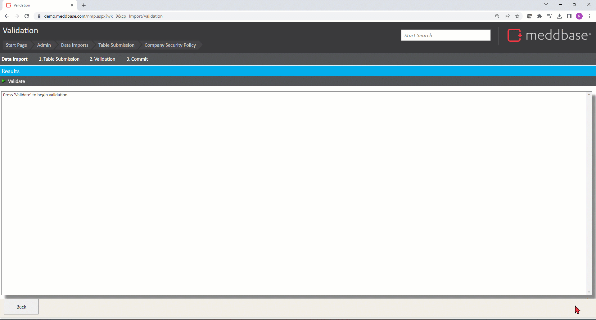

Data Imports is a built-in feature of Meddbase, allowing importing new entities or updating existing entities to/in your system in bulk. An entity in Meddbase, generally speaking, is:
A record or document - e.g. Patient, Company or Invoice
An event - e.g. Appointment or Episode
An entry - e.g. Event log
The Data Imports tool allows creating new entities or updating existing entities in bulk, saving you the trouble of having to create or update these entities one-by-one manually.
There are strict rules and solid logic behind running a successful import.
Large data imports, given their nature and complexity, may require assistance and oversight of the MMS Imports Team. Please contact the Client Account Management Team to discuss your import requirement on: accountmanagement@meddbase.com
What is the purpose of the article?
This article describes importing Patient Demographic details, including:
Creating a template for an import is useful as a starting point, where the same import will be repeated. To create a new template:
From the Start Page click the Admin tile.
Click the Data imports tile.
Click New Template.
Name the template accordingly, e.g. Patient Import.
Click Add**.
From the dropdown menus select:
Entity Name- the 1st dropdown lists all entities currently supported for importing. In this example we will select Patient
Entity Type - the 2nd dropdown allows selecting:
New - the import will create new entities in your system
Existing - the import will update existing entities
For this example we will select New, as we intend to add new patients.
Add a Description, e.g. New Patients List
Click Save Template
When running an Import from a Template you can change/add/remove entities and the descriptions, thus completely overriding the template

New Import Instance and Import Schema
Once you have created an import template, you can use it to run a new instance of an import in the Data imports section:-
1. Click the Template you wish to use
2. Click +New Instance
3. Type in the Instance Description
4. Click Schema in the respective entity's row to download a .csv spreadsheet. The Schema outlines:
What information is Required (mandatory) for importing this entity type
What information is Optional for importing this entity type
What is the expected Description, so how is the information allowed to be expressed, e.g. Unique Identifier
What are the Allowed values.
What References is a given column making*.
*Importing a piece of information in a column for an entity type may Referenceanother entity. This means that you will need to import another spreadsheet for that entity type following its respective Schema.

Patient schema

As per the Patient schema, you must provide the following information*:
PERSON_ID
NAME
SURNAME
SEX
*Even though the schema does to require a specific piece of information, it may still be needed due to your chamber configuration, e.g. if you have multiple Patient Certificates you will need to specify which one a given patient should be assigned to.
Import Template(s)
Once you have familiarised yourself with the schema(s), you can download a Template for each entity type required for the import. Templates will include all column headers*, labelled correctly** (required and optional) that were listed in the respective schema.
*It is recommended that you delete those columns from the Template where no information will be provided, so that you do not import [empty] columns. **When uploading a spreadsheet containing information you wish to import, column headers must be labelled as per the schema, incl. upper case letters and ' _ '(underscores).
In this example, the completed Template might look as shown below*:
*The spreadsheet shown below shows only the Required columns completed, as per the schema
Patient spreadsheet

Upload spreadsheet and 'Submit Tables' stage of the import
Once you populated the templates for the entity types in your import with required and optional information as needed, you can complete the 1st stage of the import:
Click Upload in each entity's row and upload the respective spreadsheet (Drag & drop or Choose files from your computer)
Click Submit Tables and the system will check whether the spreadsheets you uploaded are in line with the schema(s).
Once the Table submission is successful* click Next to move to the next stage of the import.
*If the system identifies any errors in the spreadsheet(s) you have uploaded, clicking the View Report button allows you to view the error details and take corrective action.

'Validate' stage of the import
You can now move to the 2nd stage of the import:
1. Click Validate and the system will check the values uploaded in the spreadsheet columns against the data type they correspond to.
2. Once Validation is successful* click Next to move to the final stage of the import.
*If the system identifies any errors in the data you had uploaded, clicking the View Report button allows you to view the error details and take corrective action.

'Commit' stage of the import
Once the validation is complete you can move to the final stage of the import:
Click Commit and the system will create the new entities/update the existing entities in your system
Click Finished to end the import and you will be taken back to the main Data Imports page where you can view reports from all stages of the import, download an Entity Overview spreadsheet and more.
The Outcome
The outcome of the import described in this article is that new patients have been added to your chamber. The new patients can be viewed by following these steps:
From the Start Page click Find patient on the Patient tile
Search for the imported patient(s) using the available search criteria
Import Rollback
A successful import can be rolled back and any new entities created will be removed or changes made to existing entities reversed.
A successful instance of an import is marked with icon in the Data Imports section under the Import Template the instance started from. To Rollback the import:
Expand the relevant Template icon
Click the import instance you wish to rollback
Click Rollback import*
Click Rollback to proceed
Click Ok on the pop-up warning
*There is also an option for a Partial Rollback where you can choose the entities you wish to rollback, e.g. If you imported Patients and their Employers simultaneously you can rollback only the patients you have created, whilst leaving the newly created companies intact.
 icon in the Data Imports section under the Import Template the instance started from. To Rollback the import:
icon in the Data Imports section under the Import Template the instance started from. To Rollback the import: